Analyse: Bestellportal-Fremddoku gegen CMP¶
Internes Arbeitsdokument
Diese Seite ist nicht Teil der ausgelieferten Dokumentation und wird beim Bau des Docs-ZIP ausgeschlossen. Sie enthält eine ungeschönte Bewertung des eigenen Systems inklusive offener Schwachstellen und dient der internen Entscheidungsfindung.
Quelle der Analyse: analyse/analyse-bestellportal.md im Repo. Die dort
referenzierten Prototyp-Screenshots werden bewusst nicht veröffentlicht.
Quellen: analyse/bestellportal_anon.md (Bookstack-Export, 2819 Zeilen, 8 Kapitel),
analyse/anforderungen.md, analyse/proto1.png–proto3.png, analyse/django.png
Analysiert am: 2026-07-21 · CMP-Stand: analysiert gegen v1.3.2 (330 Tests), veröffentlicht mit v1.3.3
Methodik: Jede Aussage über CMP ist gegen den echten Code geprüft, nicht gegen unsere
eigene Doku und nicht aus dem Gedächtnis. Die Beleg-Spalten nennen Datei und Zeile.
0. Lesehinweis und Abgrenzung¶
Die Fremddoku beschreibt ein API-First-System: Django + DRF als reine REST-API,
JWT-Token, ein getrenntes JS-Frontend (React/Angular/Vue), /api/v1/-Versionierung,
Serializer als Validierungsschicht (Kapitel D, Zeilen 1533–1712).
CMP ist der bewusste Gegenentwurf: rein SSR. Django-Templates rendern serverseitig,
HTMX tauscht Fragmente, Session-Auth über allauth — kein DRF, kein JWT, kein JS-Frontend
(CLAUDE.md). Die Forderung in analyse/anforderungen.md:4 („Dokumentation … muss auf
API First neu aufgebaut werden") betrifft das Fremdsystem auf der Zielmaschine, nicht CMP.
Interessant: Die Quelldoku selbst stellt beide Wege gegenüber (Zeilen 84–96) und beschreibt SSR mit Django + HTMX als den Weg für eine „Frontend Standard App". Der Prototyp, der dort dokumentiert ist (Zeilen 2240–2752), ist dann auch SSR mit HTMX — nicht DRF. Die Konzeptkapitel und der real gebaute Prototyp widersprechen sich also bereits in der Quelle. CMP steht damit näher am gebauten Prototyp als an der eigenen Konzeptdoku des Fremdsystems.
Übersetzungsregel für diesen Report: Wo die Doku eine API-First-Lösung fordert, steht hier nicht „passt nicht", sondern die SSR-Entsprechung:
| Fremddoku (API-First) | CMP (SSR) |
|---|---|
| DRF-Serializer validiert Input | Django forms.Form/ModelForm (cmp/apps/orders/forms.py) |
POST /api/v1/orders/<id>/submit/ |
POST auf orders:submit → Redirect + Message |
| JWT Access/Refresh, stateless | Session-Cookie via allauth, serverseitiger Session-State |
IsOwner/IsApprover-Permissions |
Mixins in cmp/core/mixins.py (RequesterRequiredMixin, AdminRequiredMixin, SuperadminRequiredMixin) |
| OpenAPI/Swagger-Doku | Kein API-Vertrag nötig — die Oberfläche ist der Vertrag; Doku in cmp-docs/ |
| Frontend rendert JSON | Server rendert HTML, HTMX tauscht Fragmente |
1. Gap-Analyse CMP ↔ Fremddoku¶
1a. Funktionale Anforderungen (MUSS)¶
Legende: ✅ erfüllt · 🟡 teilweise · ❌ fehlt · ➖ n.a. (API-First-spezifisch)
Bestellung (FM_BE01–09)¶
| ID | Anforderung | CMP | Beleg |
|---|---|---|---|
| FM_BE01 | Bestellformular anzeigen | ✅ | cmp/apps/orders/urls.py:11-12 (create, create_form), cmp/templates/orders/form_view.html |
| FM_BE02 | Bestellung speichern, löst Aufbau aus | 🟡 | Speichern ✅ OrderService.create_order (cmp/apps/orders/services.py:12) — Auslösen des Aufbaus nicht verdrahtet, siehe §1c „Bruchstelle" |
| FM_BE03 | Parameter automatisch befüllen/einschränken | ✅ | cmp/apps/orders/forms.py (dynamische Felder aus template_parameters), cmp/apps/cmdb/models.py:24 ContextRestriction |
| FM_BE04 | Bestellungsübersicht | ✅ | cmp/apps/orders/urls.py:9 list, cmp/templates/orders/order_list.html |
| FM_BE05 | Filter auf eigene Bestellungen | ✅ | OrderService.list_user_orders (cmp/apps/orders/services.py:25) |
| FM_BE06 | Status in der Übersicht | ✅ | cmp/templates/orders/order_list.html:55 ({% status_badge %}) |
| FM_BE07 | Detailansicht | ✅ | cmp/apps/orders/urls.py:10 detail |
| FM_BE08 | Bestellung bearbeiten | 🟡 | Nur Positionen: add_item/remove_item (urls.py:13-14). Keine Edit-View für die Order selbst |
| FM_BE09 | Bestellung entfernen | ❌ | grep -n 'delete' cmp/apps/orders/views.py → kein Treffer; gelöscht wird nur ein OrderItem (services.py:58) |
Genehmigung (FM_GE01–04)¶
| ID | Anforderung | CMP | Beleg |
|---|---|---|---|
| FM_GE01 | Genehmigungspflichtige Bestellungen anzeigen | ✅ | cmp/apps/approvals/urls.py:8 queue, ApprovalService.list_pending_requests (services.py:96) |
| FM_GE02 | Detailansicht um Approve/Reject erweitern | ✅ | cmp/apps/approvals/urls.py:9,14, cmp/templates/approvals/approval_queue.html |
| FM_GE03 | Genehmigen, danach Aufbau einleiten | 🟡 | Genehmigen ✅ ApprovalService.approve (services.py:49) — setzt Order auf APPROVED und endet dort. Kein Provisioning-Trigger |
| FM_GE04 | Ablehnen + Besteller informieren (Mail und in-App) | 🟡 | Ablehnen ✅ ApprovalService.reject (services.py:75) — keine Benachrichtigung, keine Mail |
Produkte und Parameter (FM_PP01–11)¶
| ID | Anforderung | CMP | Beleg |
|---|---|---|---|
| FM_PP01 | Produktübersicht | ✅ | cmp/apps/catalog/urls.py:8 list |
| FM_PP02 | Produktdetails | ✅ | cmp/apps/catalog/urls.py:9 detail |
| FM_PP03–05 | Produkt anlegen/bearbeiten/löschen (Admin) | ✅ | Django Admin (cmp/apps/catalog/admin.py) — bewusst als primäres Admin-Werkzeug (CLAUDE.md) |
| FM_PP06–10 | Parameter verwalten | 🟡 | Parameter sind JSON im Template (ServiceTemplate.parameters = JSONField(default=list), cmp/apps/catalog/models.py:20), kein eigenes ProductParameter-Modell → keine eigene Verwaltungs-UI, Pflege nur im JSON-Feld |
| FM_PP11 | Parameter im Bestellformular anzeigen | ✅ | cmp/apps/orders/forms.py baut Felder zur Laufzeit aus parameters |
Benutzerverwaltung und Authentifizierung (FM_BA01–07)¶
| ID | Anforderung | CMP | Beleg |
|---|---|---|---|
| FM_BA01 | Anmeldung mit Authentifizierung | ✅ | allauth, cmp/config/urls.py:6; ACCOUNT_SIGNUP_ENABLED = False (settings/base.py:99) |
| FM_BA02–06 | Benutzer anzeigen/anlegen/bearbeiten/löschen | ✅ | Django Admin + cmp/apps/accounts/admin.py; Rolle als Feld (accounts/models.py:9) |
| FM_BA07 | Anbindung Active Directory | ❌ | grep -in ldap requirements.txt → kein Treffer. Kein django-auth-ldap, keine AD-Sync-Logik |
Allgemein (FM_AG01–04)¶
| ID | Anforderung | CMP | Beleg |
|---|---|---|---|
| FM_AG01 | Startseite mit Kacheln | ✅ | cmp/apps/dashboard/urls.py:8 home, cmp/templates/dashboard/dashboard.html |
| FM_AG02 | Anbindung OpenTofu | ❌ | cmp/apps/provisioning/clients.py ist GitLabStubClient — In-Memory-Dict, uuid4() als Pipeline-ID. Kein python-gitlab, kein HTTP-Call |
| FM_AG03 | E-Mail-Versand | ❌ | grep -rn 'send_mail\|EMAIL_BACKEND' cmp/ → kein Treffer |
| FM_AG04 | Systembenachrichtigungen | 🟡 | Modell + Service + UI vollständig da (cmp/apps/notifications/), aber kein Workflow erzeugt eine — siehe §1c |
KANN-Anforderungen (FK_*)¶
| ID | Anforderung | CMP | Beleg |
|---|---|---|---|
| FK_BE01 | Bestehende Bestellung als Vorlage | ❌ | Keine Kopier-/Vorlagen-Funktion in orders/views.py oder services.py |
| FK_BE02 | Massenbestellung | ✅ | OrderItemGroup mit quantity + shared_parameters (cmp/apps/orders/models.py:32-45) — deckt „gemeinsame vs. instanz-spezifische Parameter" exakt ab |
| FK_BE03 | Redundante Systeme (2 Standorte) | 🟡 | Datenseitig möglich über AvailabilityRule.location (cmp/apps/cmdb/models.py:7), kein Bestell-Komfort dafür |
| FK_AG01 | Personalisierung / Dark-Mode | 🟡 | DaisyUI-Theme „Lucent" vorhanden; kein Umschalter, keine Kachel-Konfiguration |
1b. Domänenmodell (Kapitel A der Quelldoku)¶
| Fremddoku | CMP | Bewertung |
|---|---|---|
User mit Rollen |
accounts.User(AbstractUser) + role (cmp/apps/accounts/models.py:7-13) |
✅ gleichwertig; Rolle als Feld statt AD-Gruppen-Mapping |
Product |
catalog.ServiceTemplate (cmp/apps/catalog/models.py:14) |
✅ mit category, is_active, version — Versionierung hat die Quelle nicht |
ProductParameter (eigenes Objekt: Typ, Pflicht, Default, Validierung) |
JSON-Liste ServiceTemplate.parameters |
🟡 bewusster Unterschied. Flexibler, aber nicht per Admin-UI/DB-Constraint prüfbar |
Order (mit Produkt-FK + Parameter-JSON) |
orders.Order ohne Produkt-FK; Produkt hängt an OrderItem |
✅ besser — mehrere Positionen je Bestellung, die Quelle kann nur eine |
| — | OrderItemGroup |
✅ Mehrwert gegenüber der Quelle (Massenbestellung) |
Approval |
approvals.ApprovalRequest + ApprovalRule (condition JSON, approver_role) |
✅ weiter als die Quelle: dort sind Mehrstufigkeit (Z. 1408–1410) und Produktregeln (Z. 1414–1416) ausdrücklich „noch offen" |
Automation/Provisioning |
provisioning.DispatchLog + ProvisioningService |
🟡 Struktur da, Client ist Stub |
| Subscription („≠ OrderItem, lebt länger als die Order", Z. 814–817) | subscriptions.Subscription (FK auf OrderItem, valid_from/valid_until, status) + GroupSubscription |
✅ Anforderung strukturell erfüllt |
AuditLog (Kapitel E, Z. 1857) |
audit.AuditLog + CSV-Export (cmp/apps/audit/views.py:32) |
🟡 Modell besser (Export!), Befüllung fehlt — siehe §1c |
Statusmodell-Diff
| Fremddoku | CMP (cmp/core/domain/value_objects.py:5-14) |
|---|---|
| DRAFT → SUBMITTED → PENDING_APPROVAL → APPROVED/REJECTED → PROVISIONING → COMPLETED/FAILED | DRAFT → VALIDATED → SUBMITTED → PENDING_APPROVAL → APPROVED/REJECTED → PROVISIONING → DONE/FAILED |
Zwei Abweichungen: ein zusätzlicher Zustand VALIDATED (Validierung vor dem Einreichen als
eigener Schritt) und DONE statt COMPLETED. Beides unkritisch. Unser Plus: die
Übergänge sind als Datenstruktur TRANSITIONS + StatusMachine.validate_transition
erzwungen (value_objects.py:17-56) — die Quelldoku beschreibt das Statusmodell nur
tabellarisch, ohne Übergangsprüfung.
Rollen-Diff
| Fremddoku (Z. 1177–1182) | CMP (cmp/core/domain/enums.py:5-9) |
|---|---|
| REQUESTER, MODIFIER, APPROVER, ADMIN | requester, approver, admin, superadmin |
MODIFIER (darf fremde Bestellungen ändern, aber nicht genehmigen — Matrix Z. 1236–1244)
fehlt bei uns; superadmin (nur bei uns, Zugriff auf admin_rules,
cmp/apps/dashboard/admin_views.py:38) fehlt dort. Beides ist eine bewusste Entscheidung
wert, kein Versehen — aber falls das Fremdsystem Referenz sein soll, ist MODIFIER die
einzige echte Lücke.
1c. Die Bruchstelle: der Workflow ist nicht verdrahtet¶
Der wichtigste Befund dieser Analyse — und er betrifft nicht die Fremddoku, sondern CMP.
Alle Bausteine der Kette „genehmigt → provisioniert → fertig → Subscription → Audit → Benachrichtigung" existieren, sind getestet und funktionieren einzeln. Aber niemand ruft sie in der laufenden Anwendung auf. Belege:
| Baustein | Definiert in | Aufgerufen von |
|---|---|---|
ApprovalService.needs_approval / create_approval_requests |
cmp/apps/approvals/services.py:14,25 |
nur Tests — in cmp/ kein einziger Aufruf |
dispatch_provisioning / complete_provisioning (Celery) |
cmp/apps/provisioning/tasks.py:7,13 |
niemandem — grep -rn 'tasks\.' cmp/apps liefert außerhalb der Datei selbst nichts |
SubscriptionService.create_from_order |
cmp/apps/subscriptions/services.py:14 |
nur Tests (tests/unit/test_subscription_service.py, tests/e2e/test_order_workflow.py:56) |
AuditService.log |
cmp/apps/audit/services.py:5 |
nur seed.py (7×, Zeilen 377–407) |
NotificationService.create / Notification.objects.create |
cmp/apps/notifications/services.py:7 |
nur seed.py (6×) und Tests |
Nachtrag 2026-07-22 — die Kette bricht noch früher
Die erste Fassung dieses Abschnitts setzte bei approve() an. Beim Ausarbeiten des
Arbeitspakets zeigte sich: schon der Schritt davor fehlt.
OrderService.submit_order (cmp/apps/orders/services.py:61-77) setzt
DRAFT → VALIDATED → SUBMITTED und endet. Niemand ruft danach
create_approval_requests — es entsteht also gar kein ApprovalRequest.
ApprovalQueueView (cmp/apps/approvals/views.py:12) filtert aber genau darauf.
Folge: Eine über die Oberfläche eingereichte Bestellung bleibt dauerhaft in
SUBMITTED und erscheint bei keinem Genehmiger. Die Approval-Queue zeigt
ausschließlich die von seed.py erzeugten Requests (Zeilen 178, 349).
approve() wird im laufenden System nie erreicht — der ursprünglich als
„Endpunkt der Kette" beschriebene Bruch ist erst der zweite von sechs.
Warum das beim ersten Durchgang durchrutschte: Die Prüfung folgte der Kette rückwärts von den ungenutzten Bausteinen aus, statt sie vorwärts vom Klick des Nutzers her durchzugehen. Die vollständige Liste der sechs Lücken steht in §5.
ApprovalService.approve() (cmp/apps/approvals/services.py:49-72) setzt den Order-Status
auf APPROVED und endet ebenfalls — erreichbar ist es derzeit aber nur über per Hand
oder von seed.py angelegte Requests.
Konsequenz für den Betrieb:
- Das Audit-Log enthält ausschließlich Seed-Demodaten. Eine echte Genehmigung in der Oberfläche erzeugt keinen Audit-Eintrag. Kapitel E der Fremddoku („unveränderbare Logs aller Bestellungen, Approvals, Provisioning", Z. 714) ist damit bei uns nicht erfüllt, obwohl Modell und Export-View das Gegenteil suggerieren.
- Die Benachrichtigungs-Glocke zeigt nur Seed-Einträge. FM_AG04 ist faktisch offen.
- Eine genehmigte Bestellung wird nie zu einer Subscription.
Das ist kein Bug in einem einzelnen Service, sondern eine fehlende Verdrahtung zwischen den
Schichten — TDD hat jeden Baustein isoliert grün bekommen, die Naht dazwischen hatte nie
einen Test. Der tests/e2e/test_order_workflow.py ruft die Schritte selbst nacheinander
auf und beweist deshalb genau diese Naht nicht.
Empfehlung: eigenes AP mit Vorrang vor AD/OpenTofu — die aufwendigen Fremdanbindungen zahlen nicht ein, solange die interne Kette offen ist.
1d. Bewusst nicht übernommen¶
| Fremddoku | Warum bei CMP nicht |
|---|---|
DRF, /api/v1/, Serializer, OpenAPI/Swagger |
SSR-Architektur — Grundsatzentscheidung (CLAUDE.md) |
| JWT + Refresh-Token + Token-Blacklist (Kap. B, Z. 1137–1141) | Session-Auth; Blacklist wäre ohne JWT gegenstandslos |
| Stateless-API-HA über mehrere Instanzen (Z. 1317–1331) | Zielbild ist eine Single-VM-Installation (cmp-docs/docs/betrieb/laufzeit-topologie.md) |
| Prometheus/Grafana/Sentry/PagerDuty (Kap. E) | Kein Monitoring-Stack im air-gapped Single-VM-Zielbild |
| Container/K8s (Z. 721, 1880) | ADR-0001 entscheidet bewusst für native systemd-Installation; Container bleibt AP-11 (optional) |
2. Antworten auf analyse/anforderungen.md¶
2.1 Installer idempotent machen — inklusive Abräumzweig¶
Ist: deploy/install.sh (361 Z.) ist als idempotent angelegt und dokumentiert
(Zeile 23: „Wiederholt ausführbar (idempotent): ein zweiter Lauf aktualisiert die …").
Es gibt drei Aktionen — --install, --check, --restart — plus ein interaktives Menü
(Zeilen 329–348) und die Flags --with-packages, --skip-nginx. Die Bausteine in
deploy/lib.sh sind konsequent als ensure-Funktionen gebaut (cmp_pg_ensure,
cmp_ensure_redis, cmp_render_web_unit, …), also auf Wiederholbarkeit ausgelegt.
Lücke: Es gibt keinen Abräumzweig. grep -n 'uninstall\|purge\|remove' deploy/install.sh
liefert nichts. Für eine Testumgebung, die wiederholt sauber aufgesetzt werden soll, fehlt
genau die Gegenrichtung.
Vorschlag:
--uninstall(Dienste stoppen + deaktivieren, Units löschen, nginx-Site entfernen, App-Verzeichnis löschen — DB und.envbleiben)--purge(zusätzlich DB-Rolle + Datenbank +.env+ Logs) mit expliziter Rückfrage- Beide über dieselben
lib.sh-Bausteine, damit Install und Uninstall nicht auseinanderlaufen - Menüpunkt „4) Entfernen" analog zu den bestehenden drei
- Trockenlauf
--dry-runfür beide, damit sich die Wirkung vorher zeigen lässt
Die Idempotenz selbst ist nicht bewiesen, nur behauptet — sie ist bisher nie auf echter Hardware zweimal gelaufen (offener Punkt „VM-Verifikation" aus dem Handoff v1.3.0). Ein zweiter Lauf gehört in dieselbe VM-Session.
2.2 Granulares Logging¶
Ist: keins. Zwei Belege:
grep -rn 'LOGGING' cmp/config/ → kein Treffer
grep -rn 'import logging|getLogger' cmp/ → kein Treffer
CMP hat null eigene Logging-Konfiguration und keinen einzigen Logger-Aufruf. Was
heute existiert, ist Djangos Default (Requests auf die Konsole) plus self.stdout.write in
den Management-Commands (cmp/apps/accounts/management/commands/seed.py:31,36) — das landet
im Journal des install.sh-Aufrufs, ist aber weder strukturiert noch je Domäne trennbar.
Vorschlag (an Kapitel E der Quelldoku angelehnt, Z. 1740–1768, aber ohne deren JSON-/ELK-Annahme):
LOGGING-Dict incmp/config/settings/base.py, Level je Umgebung überschreibbar- Benannte Logger je Domäne:
cmp.orders,cmp.approvals,cmp.provisioning,cmp.audit— analog zu derenorder_logger/automation_logger - Handler: Konsole (→ journald, passt zur systemd-Installation) statt eigener Logdatei; eine Datei nur, wenn sie auch rotiert wird
- Einzelschritte der Seeds über
logger.infostattself.stdout.write, damit sie im Journal landen — genau die Forderung ausanforderungen.md:2 - Wichtig: Logging ist nicht das Audit-Log. Das Audit-Log ist fachlich und in der DB (§1c); Logging ist technisch. Beide werden gebraucht, keins ersetzt das andere.
2.3 Dev- und Test-Umgebung per Schalter¶
Ist: existiert bereits, über getrennte Settings-Module in cmp/config/settings/:
| Modul | Aktiviert durch | Kern |
|---|---|---|
development.py |
cmp/manage.py:7 (Default), run.sh:188 |
DEBUG=True, ALLOWED_HOSTS=["*"], Celery eager |
testing.py |
pytest.ini:2 |
DEBUG=False, feste Test-DB, MD5-Hasher, Celery eager |
production.py |
deploy/lib.sh:175,204 (systemd Environment=) |
alles aus der Umgebung via django-environ, Security-Hardening |
Der „Schalter" ist also DJANGO_SETTINGS_MODULE. Was fehlt, ist weniger ein Schalter als
Sichtbarkeit und eine Zwischenstufe:
- Es gibt kein
staging/integration-Profil (die Quelldoku kennt DEV/Integration/Prod, Z. 11). Für „QR-Umgebung" ausanforderungen.md:23bräuchte es eins — praktischproduction.pymit abweichender.env, kein eigenes Modul. - Die aktive Umgebung ist in der Oberfläche nicht erkennbar. Ein Umgebungs-Badge im Header (dev/test/prod) verhindert die klassische Verwechslung.
run.shkennt nurserve(immer development). Einrun.sh serve --settings=…wäre die kleine, ehrliche Ergänzung.
2.4 Installations-Protokoll¶
Ist: install.sh gibt live formatierte Statusmeldungen aus (ok/info/warn/die,
Zeilen 53–57) und zeigt am Ende ein Panel (panel_zeigen, Z. 107) — aber nichts davon
wird persistiert. Wer die Konsole schließt, hat kein Protokoll.
Vorschlag: am Ende von aktion_installieren() ein Protokoll nach
/var/log/cmp/install-<zeitstempel>.log und eine Kurzfassung nach
/opt/cmp/INSTALL-REPORT.txt schreiben, mit:
- CMP-Version (
BUNDLE_VERSION,install.sh:77), Datum, Host, OS-Version - Python-/Django-/PostgreSQL-Version
- Ports und Units (
cmp-web,cmp-celery, nginx, Redis) mit Status - TLS-Modus (
cmp_portal_proto,lib.sh:373) und die daraus folgende Cookie-Einstellung - DB-Name/-Rolle, Migrationsstand, Ergebnis des Seeds (Anzahl je Objekttyp)
- die real erzeugte URL, über die das Portal erreichbar ist
- explizit keine Secrets (kein
SECRET_KEY, kein DB-Passwort)
2.5 HTMX-Fallstricke¶
Hier zuerst der Ist-Stand, weil er die Fallstricke am eigenen Code zeigt:
- HTMX ist lokal eingebunden (
cmp/static/js/htmx.min.js, referenziert incmp/templates/base.html:9) — die globale Kein-CDN-Regel ist eingehalten. ✅ django-htmx==1.27.0mit aktiver Middleware (settings/base.py:17,43) →request.htmx.- HTMX wird real nur in 2 von 30 Templates genutzt:
catalog/template_list.htmlundaudit/audit_list.html.
Fallstrick 1 — Fragment vs. ganze Seite. In unserem Code aktiv falsch.
cmp/templates/audit/audit_list.html feuert hx-get auf audit:list mit
hx-target="#audit-table" (Zeilen 15–29). Die zugehörige AuditLogListView
(cmp/apps/audit/views.py:9) hat aber kein get_template_names() mit htmx-Zweig —
grep -rn 'get_template_names' cmp/apps/*/views.py findet das nur in catalog/views.py:25.
Ein Audit-Filter liefert deshalb die komplette Seite inklusive {% extends "base.html" %}
zurück und swappt sie in ein <div> der Seite selbst: verschachtelte Navigation, doppelte
Element-IDs, doppeltes <html>-Gerüst. Ein Audit-Partial existiert nicht
(find … | grep audit → nur audit_list.html).
Die richtige Lösung steht bereits daneben — catalog/views.py:25-28 macht es korrekt:
def get_template_names(self):
if self.request.htmx:
return ["catalog/partials/template_grid.html"]
return [self.template_name]
Fallstrick 2 — CSRF bei hx-post. Django verlangt den CSRF-Token; HTMX schickt ihn nicht
von selbst. Entweder hx-headers='{"X-CSRFToken": "{{ csrf_token }}"}' am <body> setzen
oder das Formular normal mit {% csrf_token %} rendern und hx-post auf das <form> legen.
Aktuell nicht akut, weil wir nur hx-get verwenden — aber das ändert sich mit dem ersten
HTMX-Formular.
Fallstrick 3 — Fehlerantworten werden nicht geswappt. HTMX ignoriert 4xx/5xx
standardmäßig: der Nutzer klickt, und nichts passiert. Braucht htmx:responseError
oder serverseitig 200 mit Fehler-Fragment.
Fallstrick 4 — doppelte IDs nach dem Swap. Wenn das Fragment die ID enthält, die auch
das Ziel trägt, entstehen je nach hx-swap zwei Elemente gleicher ID. Deshalb gilt unsere
Regel „hx-target/hx-swap immer explizit" (.claude/rules/htmx.md) — Default ist
innerHTML, und wer das nicht weiß, baut genau diesen Fehler.
Fallstrick 5 — Historie/Back-Button. Ohne hx-push-url ändert sich die URL nicht; der
Nutzer verliert seinen Filter beim Neuladen und der Zurück-Button springt aus der Seite
heraus. audit_list.html:19,29 setzt hx-push-url="true" — der Filter landet also in der
URL, aber der zurückgelieferte Inhalt ist derzeit (Fallstrick 1) die ganze Seite.
Fallstrick 6 — Autorisierung. Ein HTMX-Endpoint ist ein normaler View und muss dieselben
Mixins tragen wie die Vollseite. Bei uns erfüllt (RequesterRequiredMixin,
AdminRequiredMixin in cmp/core/mixins.py), aber es ist der Fehler, der bei „das ist doch
nur ein Fragment" am leichtesten passiert.
Fallstrick 7 — Events nach dem Swap. Getauschtes HTML hat keine JS-Listener mehr. Für
Chart.js in dashboard.html relevant, sobald ein Chart-Bereich per HTMX getauscht wird →
htmx:afterSwap statt DOMContentLoaded.
2.6 Was über JS lösen — und wie beides absichern¶
Faustregel: HTMX für alles, was Server-Zustand braucht (Filtern, Nachladen,
Absenden, Statuswechsel). Vanilla-JS nur für rein clientseitige Darstellung ohne
Sicherheitsrelevanz: Chart-Rendering (haben wir, chart.umd.min.js), Auf-/Zuklappen,
Sortieren einer bereits geladenen Tabelle, Fokus-/Tastatur-Handling. Kein Framework.
Absicherung — der eine Satz, der zählt: Autorisierung passiert ausschließlich serverseitig. Ein per JS ausgeblendeter Button ist keine Berechtigung; ein nicht gerendertes Template-Stück ist erst dann sicher, wenn der zugehörige View die Rolle prüft. Konkret:
- Rollenprüfung in Views/Mixins, nicht nur im Template (
{% if %}ist Kosmetik) - Objektbezug prüfen („gehört diese Bestellung dem Anfragenden?") — die Fremddoku fordert
das als
IsOrderOwner(Z. 1229), bei uns gehört es in die Views/Services - Django-Autoescaping nicht mit
|safeaushebeln;details-JSON aus dem Audit-Log ist Fremdinhalt und wird gerendert (audit_list.html:57) - CSRF für jeden verändernden Request, auch aus HTMX
- Lücke: Es gibt keine CSP (
grep -rn 'CSP\|Content-Security' cmp/ deploy/→ kein Treffer). Da alle Assets lokal liegen, wäre eine strenge Policy fast kostenlos —default-src 'self', keinunsafe-inline(dafür müssten die<script>-Blöcke inbase.html,dashboard.html,approval_queue.htmlin Dateien wandern). Der nginx-Block indeploy/lib.sh:334(cmp_render_nginx) wäre der Ort.
2.7 .env vs. uv — die Frage vergleicht zwei verschiedene Dinge¶
Das sind keine Alternativen, sie lösen unterschiedliche Probleme:
.env |
uv |
|
|---|---|---|
| Was | Datei mit KEY=VALUE, gelesen von python-dotenv/django-environ |
Paket- und Venv-Manager (Rust, Ersatz für pip/venv/pip-tools) |
| Löst | Konfiguration und Secrets aus dem Code halten | Abhängigkeiten installieren, Versionen sperren (uv.lock) |
| Ersetzt | hartcodierte Settings | pip install, python -m venv |
Man kann beides gleichzeitig verwenden — das Fremdprojekt tut genau das (uv run python
manage.py runserver, Z. 2739, plus .env für Token, Z. 2774).
Bei CMP:
- Konfiguration:
django-environincmp/config/settings/production.py:14-35. Eine.envnebenmanage.pywird gelesen, falls vorhanden — in Produktion liefert systemd die Variablen perEnvironment=(deploy/lib.sh:175,204). Das ist der bessere Weg: keine Datei mit Secrets im App-Verzeichnis. - Pakete:
pip+requirements.txt+ Offline-Wheelhouse (wheels/, cp312).uvwird nicht verwendet und ist hier auch nicht sinnvoll: der Zielserver ist air-gapped, wir installieren aus mitgelieferten Wheels.uvs Stärke (schnelles Auflösen aus dem Netz) greift dort nicht, und ein zusätzliches Binary müsste selbst erst air-gapped verteilt werden.
Das Fremdprojekt beschreibt in Z. 2764–2768 exakt dieselbe Erkenntnis: ohne interne Registry
wird pip download + Ordner im Repo verwendet, „die Verwendung vom uv.lock-File … wäre
somit hinfällig". Unser Wheelhouse-Ansatz ist genau das, nur schon gebaut.
2.8 Was muss wie abgesichert werden¶
| Gegenstand | Fremddoku | CMP |
|---|---|---|
| GitLab-Token | Masked CI/CD-Variablen → Pipeline schreibt .env auf den Zielserver; PAM als Ausbaustufe (Z. 2795–2812) |
Noch nicht relevant — Client ist Stub. Bei echter Anbindung: systemd EnvironmentFile= mit 0600, nicht .env im App-Verzeichnis |
SECRET_KEY |
.env/CI-Variable (Z. 2814–2819) |
env("SECRET_KEY") ohne Default → Fehlstart statt unsicherem Betrieb (production.py:38). Erzeugt von cmp_secret_key (lib.sh:46) |
DEBUG |
— | DEBUG=(bool, False) als Default (production.py:20); Regel „DEBUG=True in PRODUCTION ist FATAL" |
| Host-Header | — | ALLOWED_HOSTS + CSRF_TRUSTED_ORIGINS aus der Umgebung (production.py:40,61) — der dokumentierte Stolperstein „FQDN statt IP" |
| Transport | HTTPS only (Z. 1313) | TLS nur mit echtem Zertifikat; ohne Zertifikat existiert kein 443-Listener, dann HTTP mit bewusst abgeschalteten Secure-Cookies (production.py:24-27) |
| Session | JWT + Blacklist | Session-Cookie, SESSION_COOKIE_SECURE/CSRF_COOKIE_SECURE default an |
| Weitere Header | — | HSTS, X_FRAME_OPTIONS=DENY, SECURE_CONTENT_TYPE_NOSNIFF gesetzt (production.py:63-68); CSP fehlt (§2.6) |
| Rate Limiting | gefordert (Z. 1310) | ❌ nicht vorhanden — Login-Brute-Force ist ungebremst. Kandidat: django-axes oder nginx limit_req |
2.9 HA und Skalierung¶
Die Quelldoku zeichnet Load Balancer + mehrere Web/API-Server + Redis + n Worker (Z. 2007–2039) und nennt HA im Kapitel 7 selbst „nicht initial" (Z. 727–728).
CMP-Realität: eine VM, alle Dienste lokal — dokumentiert in
cmp-docs/docs/betrieb/laufzeit-topologie.md. Was uns von deren Bild trennt:
| Voraussetzung | CMP |
|---|---|
| Stateless App | 🟡 Sessions liegen in der DB (Django-Default) — bei mehreren Instanzen funktioniert das, aber Redis wäre der bessere Session-Store |
| Externe DB/Redis | 🟡 möglich (DATABASE_URL, CELERY_BROKER_URL sind Umgebungsvariablen) — nur nie erprobt |
| Mehrere Worker | ✅ Celery skaliert horizontal, sobald der Broker extern ist |
| Load Balancer/TLS-Terminierung | ❌ nginx läuft lokal, install.sh kennt nur eine Maschine |
| Zustandslose Dateien | ✅ STATIC_ROOT + collectstatic; keine User-Uploads |
Bewertung: HA ist für das Zielbild (air-gapped Single-VM) kein offener Mangel, sondern außerhalb des Scopes. Die Architektur verbaut es nicht — der ehrliche Satz für die Doku ist „nicht gebaut, nicht erprobt, aber nicht verbaut", nicht „HA-fähig".
2.10 Mermaid für die Entwicklungs-/Release-Kette¶
anforderungen.md:16-33 beschreibt die Kette Repo → Test → QR → Produktion mit
Wartungsfenster. Als Diagramm-Vorschlag (noch nicht in cmp-docs/ eingebaut):

Zur Frage „Wie umschalten auf Wartung? Einfach nur Dienste deaktivieren?" aus
anforderungen.md:27: Dienste zu stoppen reicht nicht — dann liefert nginx 502 Bad
Gateway, was für Nutzer wie ein Ausfall aussieht und Support-Anrufe erzeugt. Sauber ist eine
statische Wartungsseite, die nginx ausliefert, solange eine Marker-Datei existiert:
location / {
if (-f /opt/cmp/MAINTENANCE) { return 503; }
proxy_pass http://127.0.0.1:8000;
}
error_page 503 /maintenance.html;
location = /maintenance.html { root /opt/cmp/static-maintenance; internal; }
503 (statt 200) ist dabei das fachlich richtige Signal: Monitoring und Suchmaschinen
verstehen „vorübergehend nicht verfügbar" statt „kaputt". Ein- und Ausschalten wäre dann
touch/rm der Marker-Datei — Kandidat für install.sh --maintenance on|off.
2.11 Doku-Lieferkette und die Lernziel-Punkte¶
Die restlichen Punkte aus anforderungen.md sind Doku-Arbeitspakete, keine
Code-Fragen. Der Ist-Stand bei uns und was daraus folgt:
„Erst im *-docs Format, danach sauber als MD für Bookstack" (Z. 5)
Genau diese Kette haben wir bereits — nur mit einem anderen Ziel am Ende:
cmp-docs/docs/*.md → Zensical-Build → cmp-docs/site/ → run.sh docs-zip →
HTML-ZIP. Für Bookstack fehlt nur ein Export-Schritt, kein neues Format: Bookstack
frisst Markdown direkt. Die Stolpersteine beim Rückweg sind absehbar und in der Quelldoku
sichtbar: Bookstack schreibt <div id="…">-Anker, <p class="callout">-Blöcke und
escapte Überschriften (## 1\. Ziel) — das ist alles im Export
analyse/bestellportal_anon.md zu besichtigen. Ein Konverter müsste unsere
Mermaid-Blöcke zu Bildern rendern (Bookstack rendert kein Mermaid) und relative
Bildpfade umschreiben. Aufwand: überschaubar, aber ein eigenes AP — und die
Richtung ist zu klären: soll Bookstack das Ziel für CMP-Doku sein oder nur für die
Fremdsystem-Doku?
„Granulare Erklärungen sämtlicher Sourcen" (Z. 9)
Bei uns nicht vorhanden und auch nicht sinnvoll als Fließtext je Datei — das driftet
beim ersten Refactoring auseinander (genau die Doku-Drift-Falle, die wir schon einmal
hatten). Tragfähiger: Docstrings am Code (haben wir bereits durchgängig, z.B.
cmp/apps/subscriptions/services.py:14) plus eine Architektur-Erzählung je Schicht
in cmp-docs/docs/grundlagen/. Was der Fremddoku-Prototyp macht — jede Datei einzeln
erklären (Z. 2266–2474) — ist als Lehrmaterial wertvoll, als Referenzdoku
unwartbar. Für Lernzwecke wäre die ehrliche Form ein Tutorial „Ein Request durch CMP",
das einen echten Pfad end-to-end verfolgt (Klick → URL → View → Service → Model →
Template), statt 20 Dateien isoliert zu beschreiben.
„Wie wird ein neuer Service erstellt? Welche Kapselung? Welche Ports?" (Z. 11–13)
Zwei Lesarten, und sie führen zu völlig verschiedenen Antworten:
- Fachlich („ein neues bestellbares Produkt"): bei uns kein Code nötig — ein
neuer
ServiceTemplate-Datensatz mitparameters-JSON, angelegt im Django Admin. Das ist eine echte Stärke unseres Modells und gehört als Anleitung dokumentiert. - Technisch („eine neue Django-App"):
cmp/apps/<name>/mitmodels.py/services.py/views.py/urls.py, Eintrag inINSTALLED_APPS(settings/base.py:20-30),include()incmp/config/urls.py. Kapselungsregel:core/→apps/, nie umgekehrt (CLAUDE.md). Ports entstehen dabei keine — alle Apps laufen im selben Prozess. Ports sind ein Thema der Laufzeit-Topologie (cmp-docs/docs/betrieb/laufzeit-topologie.md), nicht der App-Struktur.
Die Frage vermischt Fachlichkeit und Deployment. Für die Doku sind es zwei Kapitel.
„OpenTofu-Export und GitLab-Schnittstelle detailliert erklären" (Z. 14–15)
Können wir derzeit nicht ehrlich erklären — bei uns existiert nur der Stub
(cmp/apps/provisioning/clients.py). Alles, was wir heute darüber schreiben würden,
wäre aus der Fremddoku abgeschrieben statt am eigenen Code geprüft. Die Quelldoku
liefert dafür die Vorlage (Z. 46–60: curl auf /variables/PROD_ORDERS + Pipeline-
Trigger; Z. 2413–2443: python-gitlab), und der Prototyp zeigt das reale Muster
inklusive seiner Fehler (§4). Empfehlung: dieses Kapitel erst schreiben, wenn der
echte Client gebaut ist (Priorität 7) — sonst dokumentieren wir eine Absicht als Zustand.
„Generierende Tools mit ins Repo, inklusive Bedienungs-Doku" (Z. 37)
Bei uns teilweise erfüllt: tools/ und scripts/ existieren, run.sh bündelt die
Einstiegspunkte (serve, docs-zip, release, appimage-build), und das
Offline-Wheelhouse (wheels/) liegt im Repo. Was fehlt, ist eine Werkzeug-Übersicht:
eine Seite, die jedes Werkzeug einmal nennt — wozu, wie aufgerufen, was es erzeugt.
Nach unserer Regel „Übersichten enumerieren jedes Item" wäre das ohnehin fällig.
3. django.png — was davon ist für CMP relevant?¶
Das Bild ist das Inhaltsverzeichnis des W3Schools-Django-Tutorials (in der Quelldoku als Ressource verlinkt, Z. 2710). Spaltenweise bewertet:
| Spalte | Relevanz für CMP | Begründung |
|---|---|---|
| Django (Intro … Update Model) | 🟢 Grundlagen — aber wir sind darüber hinaus | Views/URLs/Templates/Models sind unsere Basis. Achtung: das Tutorial legt Logik in die View; bei uns gilt „Thin Views, Logik in Services" (CLAUDE.md) |
| Display (Prepare … Add Test) | 🟢 relevant | Template-Vererbung, 404-Behandlung. base.html + {% block %} haben wir genau so |
| Admin (Admin … Delete) | 🟢 sehr relevant | Django Admin ist bei uns das primäre Admin-Werkzeug. list_display und Registrierung sind täglich genutztes Handwerkszeug |
| Syntax (Variables … Include) | 🟢 relevant | Template-Sprache. {% include %} nutzen wir für includes/status_badge.html |
| QuerySets (QuerySet … Order By) | 🟢 sehr relevant | Filtern/Sortieren ist in jedem unserer Services. Ergänzung, die das Tutorial nicht lehrt: select_related gegen N+1 |
| Static Files (Add Static … WhiteNoise) | 🟡 teilweise | {% static %} ✅. WhiteNoise nutzen wir nicht — nginx liefert STATIC_ROOT aus |
| PostgreSQL (Intro … Add Members) | 🔴 irrelevant | Die Spalte behandelt AWS RDS. Unsere DB ist lokal, per install.sh eingerichtet (cmp_pg_ensure, lib.sh:222) |
| Deploy (Elastic Beanstalk … Update) | 🔴 irrelevant, sogar irreführend | Komplett AWS Elastic Beanstalk. Unser Deployment ist AlmaLinux + systemd + nginx + Offline-Wheelhouse. Wer diese Spalte durcharbeitet, lernt nichts, was bei uns anwendbar wäre |
Kurzfassung: Die ersten fünf Spalten sind gutes Grundlagenmaterial für neue Teammitglieder — mit dem Hinweis, dass wir bei der Architektur (Services statt Fat Views) und beim Deployment bewusst anders arbeiten. Die letzten beiden Spalten sind für CMP wertlos.
Snippets aus echtem CMP-Code¶
QuerySets — mit select_related, das im Tutorial fehlt:
# cmp/apps/subscriptions/services.py:32 — vermeidet N+1 beim Rendern der Liste
Subscription.objects.filter(user_id=user_id).select_related("order_item__template")
Filtern aus Request-Parametern (statt Logik in der View zu verstreuen):
# cmp/apps/audit/views.py:15 — Muster: QuerySet schrittweise verengen
qs = AuditLog.objects.select_related("user").all()
if action:
qs = qs.filter(action__icontains=action)
Statuswechsel gehört in die Domäne, nicht in die View:
# cmp/core/domain/value_objects.py:50 — ungültige Übergänge sind unmöglich
StatusMachine.validate_transition(order.status, OrderStatus.PROVISIONING)
Static ohne CDN (globale Regel):
{# cmp/templates/base.html:9 — lokal ausgeliefert, offline-tauglich #}
<script src="{% static 'js/htmx.min.js' %}" defer></script>
4. Bewertung des Prototyps (proto1–proto3 + Kapitel „Dokumentation Prototyp")¶
Was der Prototyp ist: eine einzelne Django-App order_portal (proto1) mit W3.css und
HTMX, flacher Struktur (models.py, views.py, forms.py, utils.py, signals.py,
tests.py), Templates plus partials/-Ordner, und einem tmp/order_records.json.
Übernehmenswert¶
| Idee | Warum | CMP-Bezug |
|---|---|---|
| Kaskadierende Dropdowns per HTMX (Standort → DNS → Proxy, Z. 2479–2482) | Genau FM_BE03, und der einzige Ort, wo HTMX im Prototyp echten Mehrwert liefert | Datenseite haben wir bereits: ContextRestriction(parameter_key, context_field, allowed_values) (cmp/apps/cmdb/models.py:24). Es fehlt nur die View, die das Fragment liefert |
partials/-Konvention |
Trennt Fragment-Templates sichtbar von Vollseiten | Bei uns nur catalog/partials/. Konsequent ausrollen würde Fallstrick §2.5.1 strukturell verhindern |
blank_modal.html zum Entfernen eines Modals |
Elegant: das „x" swappt ein leeres Fragment über das Modal | Direkt übernehmbar, kein JS nötig |
Modal aus der Liste heraus (hx-get + hx-swap="afterend", Z. 2554–2556) |
Detailansicht ohne Seitenwechsel | Passt zu orders/order_list.html |
Anti-Pattern — nicht übernehmen¶
| Fund | Beleg | Problem |
|---|---|---|
signals.py pusht synchron zu GitLab |
Z. 2346–2355: @receiver(post_save, sender=Order) ruft save_to_cicd() |
Jedes Speichern blockiert auf einem HTTP-Call zu GitLab. Ist GitLab langsam/weg, hängt oder scheitert das Speichern der Bestellung. Bei uns gehört das in einen Celery-Task (cmp/apps/provisioning/tasks.py) — die Struktur dafür existiert bereits |
| Absoluter Home-Pfad im Code | Z. 2353: open("/home/<ad-domain>/<user-id>/portal_prototype/…") |
Läuft auf keiner anderen Maschine. Gehört nach settings/BASE_DIR |
| Vollständige Order-Tabelle bei jedem Save serialisieren | Z. 2348: Order.objects.all() in jedem post_save |
O(n) pro Speichervorgang; skaliert nicht |
ssl_verify=False |
Z. 2415 | Schaltet die TLS-Prüfung ab — Man-in-the-Middle-offen. Richtig wäre das interne CA-Zertifikat |
fields = "__all__" im ModelForm |
Z. 2309 | Jedes neue Modellfeld wird automatisch vom Nutzer beschreibbar — inklusive Feldern, die es nicht sein sollen. Felder explizit auflisten |
| Besteller als Freitextfeld | proto3: „Name des Bestellers" als <input type=text>; Modell: user_name = CharField (Z. 2321) |
Der Besteller ist nicht vertrauenswürdige Eingabe, sondern request.user. So kann jeder im Namen jedes anderen bestellen. Bei uns: Order.user = ForeignKey(AUTH_USER_MODEL) (cmp/apps/orders/models.py:11) |
{{ form.user_name.value }} ohne Klammern |
Z. 2588 | value ist eine Methode; im Template ohne Aufruf-Syntax funktioniert das nur, weil Django Callables automatisch aufruft — fragil und verwirrend |
| W3.css | Z. 2501 | Bei uns DaisyUI + „Lucent"-Theme. Kein Grund zu wechseln |
| Formularfelder von Hand ausgeschrieben statt Schleife | Z. 2580: „Durch die Nutzung von HTMX kann leider nicht auf eine Schleife zurückgegriffen werden" | Das ist so nicht richtig: man kann über die Felder iterieren und die HTMX-Attribute aus dem Feld-Kontext setzen (Widget-attrs im Form). Unser OrderParameterForm (cmp/apps/orders/forms.py) setzt die CSS-Klassen bereits über widget=…attrs; derselbe Weg trägt hx-* |
Ein tests.py für alles |
proto1 | Bei uns getrennt nach tests/unit, tests/integration, tests/e2e (330 Tests) |
Was der Prototyp besser macht als unser Ist-Stand¶
Fairerweise: die kaskadierenden Dropdowns sind dort real gebaut, bei uns nur die Datenstruktur dafür. Und der Prototyp verdrahtet die Kette „Order gespeichert → landet in GitLab" tatsächlich durch (wenn auch am falschen Ort) — genau die Verdrahtung, die uns laut §1c fehlt.
5. Fazit und Empfehlung¶
Was diese Analyse über CMP gezeigt hat¶
Der wichtigste Befund kam nicht aus der Fremddoku, sondern aus dem Abgleich mit ihr: CMP
hat alle Bausteine, aber die Bestellkette ist nicht verdrahtet (§1c). Eine über die
Oberfläche eingereichte Bestellung bleibt in SUBMITTED stehen und erreicht keinen
Genehmiger; Audit-Log und Benachrichtigungen enthalten ausschließlich Seed-Daten. Das ist
von außen unsichtbar, weil Seed-Daten die Oberfläche gefüllt aussehen lassen und die
Testsuite grün ist.
Die sechs fehlenden Aufrufe¶
| # | Fehlender Aufruf | Gehört ans Ende von | Folge heute |
|---|---|---|---|
| 1 | create_approval_requests — bzw. direkt APPROVED, wenn keine Regel greift |
OrderService.submit_order |
Order hängt in SUBMITTED, Queue bleibt leer |
| 2 | dispatch_provisioning.delay(order_id) |
ApprovalService.approve, sobald alle Requests genehmigt sind |
Nie PROVISIONING |
| 3 | Rückmeldung → complete_dispatch |
Stub: sofort abschließen · echter Client: Polling (siehe Rang 7) | Nie DONE/FAILED |
| 4 | SubscriptionService.create_from_order |
Übergang nach DONE |
Genehmigte Bestellung wird nie zur Subscription |
| 5 | AuditService.log |
jedem Statuswechsel | Audit-Log nur Seed-Daten |
| 6 | NotificationService.create |
eingereicht → Genehmiger · entschieden → Besteller · fertig/fehlgeschlagen → Besteller | Glocke nur Seed-Daten |
Zwei Fallstricke bei der Umsetzung, die heute niemand sieht: Der Celery-Start gehört in
transaction.on_commit(...) — sonst läuft der Task vor dem Commit und findet die Order
nicht (in dev/test durch CELERY_TASK_ALWAYS_EAGER unsichtbar). Und der Übergang
SUBMITTED → APPROVED ohne Regel ist bereits erlaubt (core/domain/value_objects.py:22),
wird aber nirgends genutzt.
Priorisierung¶
| Rang | AP | Thema | Warum diese Reihenfolge |
|---|---|---|---|
| 1 | AP-13 | Workflow verdrahten — alle sechs Aufrufe oben, von submit bis Subscription |
Ohne das zahlt keine andere Anbindung ein: das Portal nimmt heute Bestellungen entgegen, die nie jemand sieht. Braucht einen E2E-Test, der die Kette durch die Views anstößt statt Services selbst aufzurufen |
| 2 | AP-14 | Logging (§2.2) | Keine Konfiguration, kein einziger Logger-Aufruf. Voraussetzung, um Punkt 1 im Betrieb überhaupt beobachten zu können |
| 3 | AP-15 | HTMX-Fallstrick im Audit-Log (§2.5.1) | Aktiver Fehler, Fix ist ein Partial + 4 Zeilen get_template_names — Vorlage steht in catalog/views.py:25 |
| 4 | AP-16 + AP-17 | Installer: Abräumzweig + Protokoll (§2.1, §2.4) | Direkt angefordert; Voraussetzung für wiederholbare VM-Tests. Zusammen mit der offenen VM-Verifikation erledigen |
| 5 | AP-18 | E-Mail-Versand (FM_AG03) | Echte Lücke gegenüber der Anforderung; klein, sobald Punkt 1 die Auslösepunkte liefert |
| 6 | AP-19 | CSP + Rate Limiting (§2.6, §2.8) | Günstig, weil alle Assets lokal liegen |
| 7 | AP-20 | Echter GitLab-Client statt Stub (FM_AG02) | Groß, extern abhängig (Token, Netzwerk, Projekt) — erst sinnvoll, wenn 1 steht |
| 8 | AP-21 | AD/LDAP (FM_BA07) | Größte Fremdabhängigkeit; nur mit echter AD-Testumgebung sinnvoll |
Bewusst außerhalb des Scopes¶
API-First/DRF, JWT, Swagger/OpenAPI, Prometheus/Grafana/Sentry, Kubernetes, HA über mehrere Instanzen. Diese Punkte der Fremddoku gehören zu deren Architektur, nicht zu unserer.
Wo CMP der Fremddoku voraus ist¶
- Erzwungene Statusübergänge (
StatusMachine) statt nur einer Statustabelle - Mehrere Positionen je Bestellung (
OrderItem) und Massenbestellung (OrderItemGroup) — die Quelle kann ein Produkt je Order - Approval-Regeln als Daten (
ApprovalRule.condition) — dort ausdrücklich „noch offen" - Subscription-Lebenszyklus getrennt von der Order — dort als Prinzip gefordert, im Prototyp nicht vorhanden
- Template-Versionierung (
ServiceTemplate.version) - Air-gapped Offline-Installation mit Wheelhouse — die Quelle ringt in Z. 2764–2768 noch mit genau diesem Problem
- Audit-CSV-Export — sobald das Log echte Daten enthält
Offene Punkte, die diese Analyse nicht klären konnte¶
- Ob
install.shwirklich idempotent ist, ist unbewiesen — nur so dokumentiert. Ein zweiter Lauf auf echter Hardware steht aus (offener Punkt seit v1.3.0). - Ob
MODIFIERals Rolle gebraucht wird, ist eine fachliche Entscheidung, keine technische. - Welche der beiden Architekturen das Fremdsystem am Ende baut (Konzeptdoku sagt API-First/DRF, der Prototyp ist SSR+HTMX) — dieser Widerspruch steht in der Quelle selbst und ist dort zu klären.